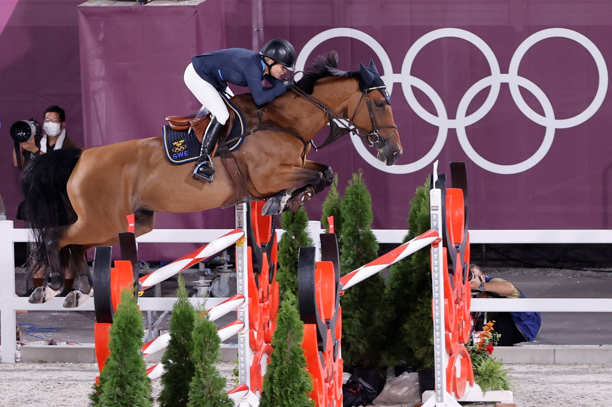
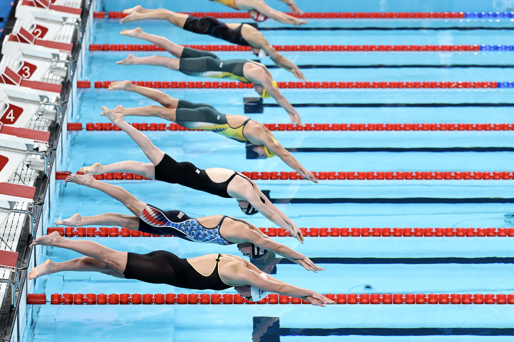
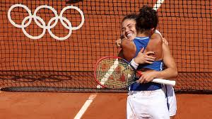
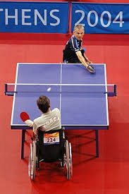
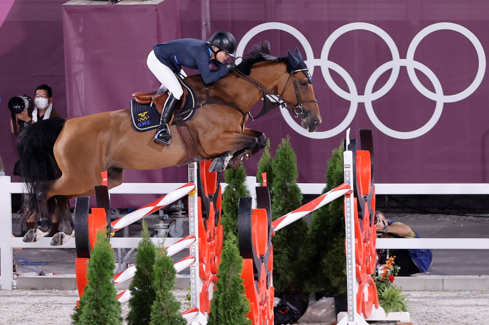
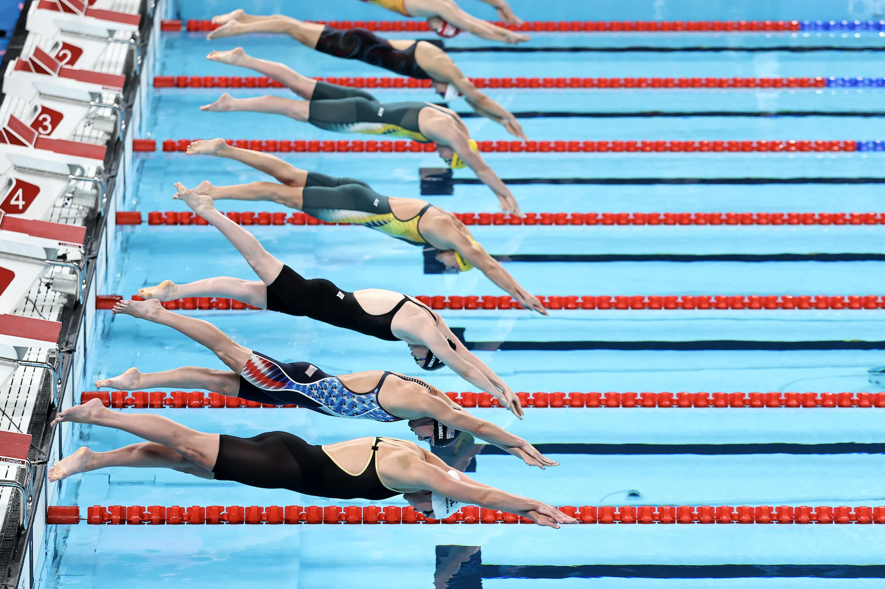
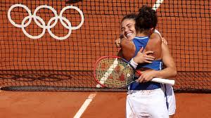
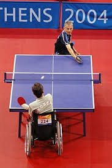

gli sport in comune tra paralimpiadi e olimpiadi...
- atletica leggera
- nuoto
- ciclismo
- equitazione
- tiro con l'arco
- tennis
- tennistavolo
- tiro a segno
esistono anche degli sport solo paralimpici o olimpici
il simbolo paralimpico e olimpico
 









gli sport in comune tra paralimpiadi e olimpiadi...
esistono anche degli sport solo paralimpici o olimpici
il simbolo paralimpico e olimpico